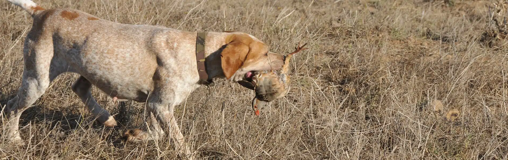
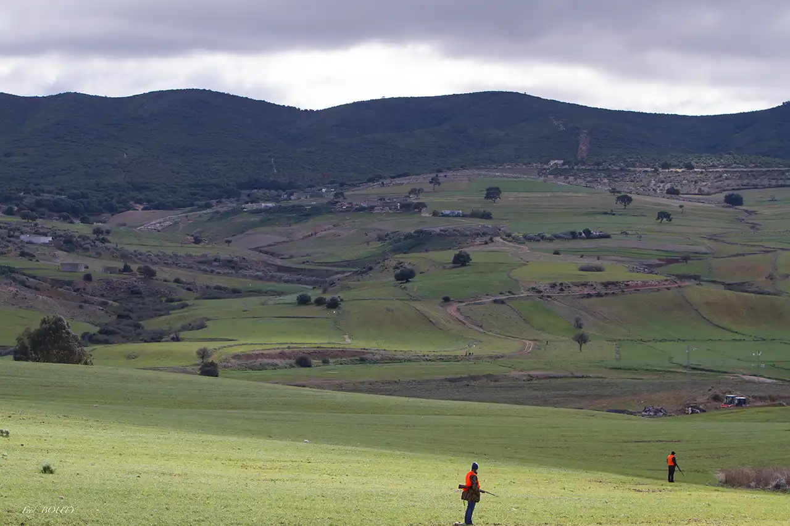
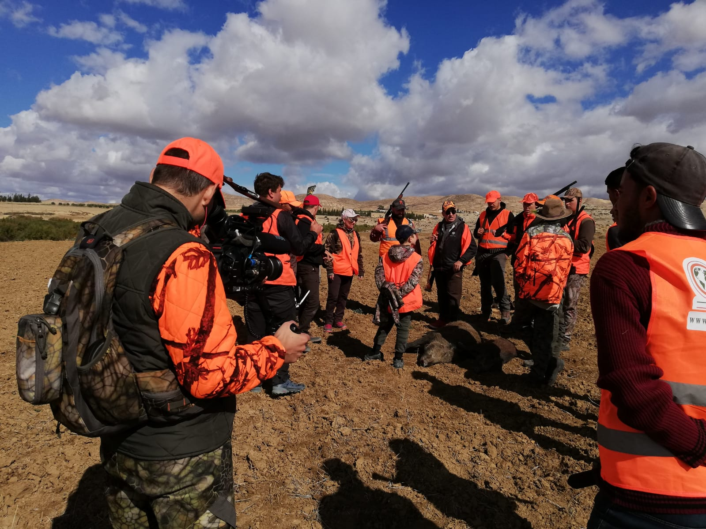

Des agences de voyages européennes aux hébergements, aux guides et aux équipes locales : comment les séjours de chasse génèrent-ils des services et des revenus au Maroc et en Tunisie ? Et de quoi l’Algérie a-t-elle besoin pour développer son offre touristique dans ce domaine ?
Le voyage peut commencer dans un bureau à Paris ou à Londres, mais ce bureau ne suffit pas à organiser une journée de chasse. En coulisses, un chauffeur accueille le groupe, un hébergement prépare les chambres, un guide connaît le terrain et une équipe s’occupe des repas et du travail sur place. Au Maghreb, ces services se réunissent dans des programmes commercialisés par des agences européennes et locales auprès d’amateurs qui viennent quelques jours et dépensent bien au-delà du seul gibier.
Après les expériences du Golfe, Sayd explore dans ce deuxième volet un autre marché : la proximité de l’Europe, des programmes consacrés à la perdrix, au petit gibier et au sanglier, et des entreprises qui assurent l’organisation locale. Le Maroc et la Tunisie offrent des exemples commerciaux et des statistiques qui éclairent cette activité. L’Algérie pose, quant à elle, la question du passage de l’encadrement de la chasse à un produit touristique complet.

Maroc : de trois journées sur le terrain à un séjour à Marrakech
Selon les données de l’Agence nationale des eaux et forêts rapportées par 2M, le tourisme cynégétique a accueilli environ 5 000 chasseurs touristes durant la saison 2025–2026, et le secteur compte 146 entreprises spécialisées. Cette base de visiteurs et d’organisateurs dépasse le cadre de voyages individuels dispersés.
Les offres montrent comment le marché européen rejoint les territoires marocains. L’agence française DHD-Laïka propose un programme entre Rabat et Tanger, avec trois jours de chasse et quatre nuits, à partir de 2 750 euros par chasseur pour un groupe d’au moins cinq personnes. L’offre comprend le vol au départ de Paris, hors taxes aéroportuaires, l’hébergement, les repas, les transferts, les guides, les porteurs et les permis. Le forfait se répartit ainsi entre transport international et services à destination : son montant ne revient pas intégralement à l’économie locale.
Dans un autre modèle destiné aux groupes privés, l’entreprise britannique William Powell Sporting commercialise El Koudia, dans les collines des Jbilet, près de Marrakech : deux jours pour huit chasseurs, au prix annoncé de 40 400 euros pour le groupe. Le personnel de terrain, l’accueil, les repas prévus, les transferts, les permis et le matériel indiqué dans l’offre sont compris, mais pas l’hébergement hôtelier. Marrakech permet aussi aux accompagnants non chasseurs de séjourner, de visiter et de faire des achats, prolongeant le voyage au-delà des heures de chasse.
Ces deux produits ne correspondent pourtant pas à la même expérience. À El Koudia, le commercialisateur précise que des oiseaux d’élevage sont lâchés avant la saison. Ce modèle diffère d’un programme reposant sur du gibier sauvage. Chacun exige une gestion et un suivi environnemental : ni la densité des oiseaux ni un prix élevé ne suffisent à démontrer sa durabilité.
L’organisateur marocain occupe également une place dans le dispositif juridique. L’encadrement du tourisme cynégétique lie l’accueil du chasseur touriste non résident à un organisateur agréé et prévoit des moyens humains, un projet d’investissement et un territoire de chasse loué. Le partenaire local n’est donc pas seulement un intermédiaire commercial : il assume des responsabilités dans la gestion du séjour et du territoire.

bien plus que le prix du gibier
Chambre et repas, transport et guidage, travail de terrain et redevances : voilà les services qui composent le séjour. La part revenant aux habitants dépend des salaires, des achats et des contrats locaux, pas du seul prix global.

Tunisie : une clientèle française bien présente… et des équipes villageoises
En Tunisie, les chiffres donnent une image concrète des visiteurs et des recettes publiques. Le Rapport national sur l’état de l’environnement et le développement durable pour 2022 recense 606 chasseurs touristes durant la saison 2021–2022, dont 532 Français. Les recettes du Trésor provenant du tourisme cynégétique ont atteint 300 233 dinars tunisiens. Ce montant historique correspond aux droits et aux recettes publiques liés à l’activité, non à l’ensemble des dépenses des visiteurs ni aux bénéfices des organisateurs.
La France reste bien présente dans la commercialisation. DHD-Laïka propose un programme consacré au sanglier, avec cinq jours de chasse et six nuits, à 2 390 euros par personne pour un groupe de dix à douze chasseurs. L’agence décrit le recours à quinze à vingt rabatteurs issus des villages, ainsi qu’à des hôtels, des transports et une organisation locale. Ces services ouvrent des possibilités de travail saisonnier dans les villages, liées aux dates des séjours, sans nécessairement constituer des emplois permanents tout au long de l’année.
Depuis la Tunisie, Desert Rose propose des programmes en espagnol, ouvrant un autre accès à la clientèle européenne. L’avantage ne tient pas seulement à la langue : l’agence locale associe sa connaissance de la région à l’hébergement, aux déplacements et à l’accueil du groupe.
La réglementation tunisienne donne à ce rôle un contenu pratique. Le tourisme cynégétique est organisé par des agences de voyages et des établissements hôteliers tunisiens selon des règles prévoyant notamment l’accompagnement par un guide, une assurance et l’obtention préalable des permis de chasse. Lorsqu’un organisateur responsable encadre le séjour, le suivi des participants et du gibier fait partie du service au lieu d’être laissé au visiteur.
des recettes publiques, pas un chiffre d’affaires
300 233 dinars tunisiens : les recettes du Trésor issues du tourisme cynégétique durant la saison 2021–2022, selon le rapport national sur l’état de l’environnement. Ce chiffre n’intègre pas automatiquement les dépenses d’hébergement, de transport et de restauration ; il ne prouve pas non plus que la totalité de ces recettes soit affectée à la protection de la nature.
Algérie : la réglementation ne suffit pas à créer une destination
La législation algérienne traite explicitement de la chasse touristique, en la reliant à une agence de tourisme et à des conditions particulières, notamment des territoires où le gibier fait l’objet d’une reproduction artificielle. La Direction générale des forêts a annoncé l’ouverture de la saison de chasse 2026–2027 pour le 10 octobre, selon Algérie Presse Service. L’ouverture générale de la chasse ne se confond toutefois pas avec la disponibilité d’un programme destiné aux touristes étrangers et répondant à toutes les conditions requises.
Pour développer cette activité sous la forme d’un produit touristique, il faut réunir les éléments du séjour : une agence qui accueille le visiteur, un territoire adapté, un hébergement, des transports, des guides et un programme clair, commercialisable et réservable. Les exemples marocains et tunisiens rappellent que la géographie ne suffit pas. Ce que le visiteur achète, c’est un séjour organisé de son arrivée à son départ.
Mauritanie : une possibilité évoquée dans les plans de développement
En Mauritanie, le diagnostic opérationnel de la stratégie touristique, élaboré en 2017 avec l’appui du Programme des Nations unies pour le développement et publié par le ministère, envisageait une reprise du tourisme cynégétique sous une réglementation stricte et appliquée, avec une coordination entre les secteurs du tourisme et de l’environnement. Cette approche place la gestion avant l’expansion de l’activité. Il s’agit d’une proposition de planification historique, non de l’annonce d’un programme de chasse actuellement en activité.
Du revenu saisonnier à une ressource durable
Les exemples maghrébins montrent où la valeur peut se créer : dans les hébergements et les hôtels, auprès des chauffeurs, des guides, des cuisiniers et des travailleurs de terrain, ainsi que dans les redevances perçues par l’État. Les accompagnants et les autres activités touristiques peuvent élargir les dépenses, plutôt que de limiter la visite à une seule journée de chasse.
Transformer cette possibilité en développement exige cependant davantage qu’une hausse du nombre de visiteurs. Les contrats, les salaires et les achats locaux déterminent ce qui reste dans la région. La formation, la sécurité et la régularité des saisons influent aussi sur la qualité et la continuité du travail. De leur côté, le gibier et les habitats nécessitent un suivi scientifique, des quotas et des contrôles : la pression sur la ressource naturelle peut fragiliser l’activité même dont vivent les habitants.
Qualifier un séjour de « durable » dans une publicité ne suffit donc pas. L’enjeu est de réunir une activité légale et contrôlable, des services dont bénéficient les habitants et une gestion qui préserve la ressource pour les saisons suivantes. À cette condition, le tourisme cynégétique devient plus qu’un voyage de passage : une possibilité pour l’économie locale, qui mérite d’être organisée, mesurée et protégée.
Sources : Agence nationale des eaux et forêts du Maroc, citée par 2M ; Rapport national tunisien sur l’état de l’environnement et le développement durable pour 2022 ; législations encadrant le tourisme cynégétique au Maroc, en Tunisie et en Algérie ; Algérie Presse Service ; diagnostic de la stratégie touristique mauritanienne de 2017 ; offres publiées par les organisateurs. Les prix cités proviennent d’offres commerciales consultées le 23 octobre 2026, et non des moyennes du marché ou une confirmation des disponibilités.
Dans cette série : Le tourisme cynégétique dans les pays arabes du Golfe.
Prochain volet : Le tourisme cynégétique en Égypte, en Irak et en Jordanie.
Sources des photos : William Powell Sporting, DHD-Laïka, Chasse Sanglier Tunisie